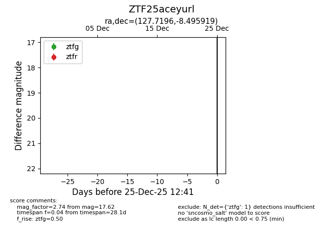
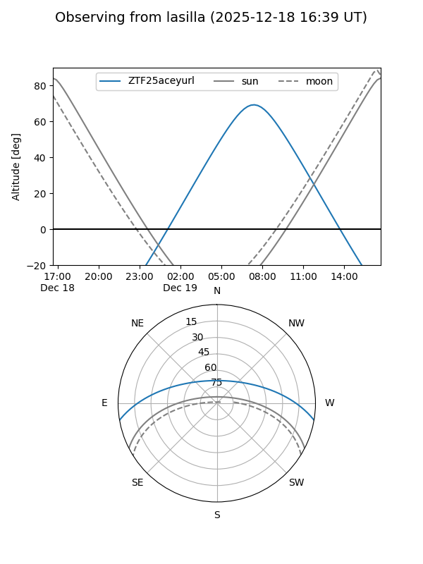
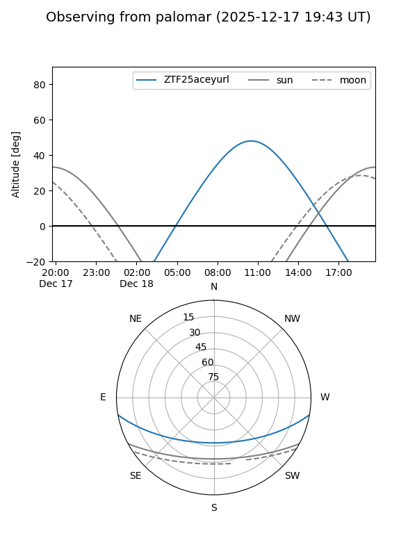

ZTF25aceyurl
Target ZTF25aceyurl at 2025-12-25 12:42
Aliases and brokers:
FINK: fink-portal.org/ZTF25aceyurl
Lasair: lasair-ztf.lsst.ac.uk/objects/ZTF25aceyurl
ALeRCE: alerce.online/object/ZTF25aceyurl
alt names
ZTF25aceyurl (ztf,fink_ztf)
Coordinates:
equatorial (ra, dec) = 127.7196,-8.49592
equatorial (HMS+DMS) = 08:30:52.71,-08:29:45.31
galactic (l, b) = (232.6190,+17.61881)
Flags:
Photometry:
last ztfg=17.62
1 ztfg detections
Lightcurve

Visibility


Additional plots